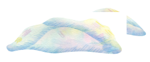
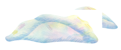

-about me-
「 はじめまして、さとうです 」


デザインが生み出す小さな魔法
大学3年の夏、私は就職活動でいくつもの新卒採用サイトを見て、頭を悩ませていました。 その中で、とあるサイトを見たとき、「まるで魔法みたいだ」と感じた瞬間がありました。 画面が動き出し、思わず笑顔になってしまう仕掛けに、ただ情報を得るだけの時間が、 気がつけばわくわくする瞬間に変わっていました。 憂鬱だった就職活動の時間が、そのデザインによって、一瞬で心躍る体験に変わったのです。
デザインを通じて、日常に「ちょっとした魔法」をかけるような体験を届けたい。
それは、目の前の世界に新しい驚きや感動をプラスすること。 私が感じた、あのささやかな魔法のような体験を、 デザインを通じて多くの人に届けられるデザイナーになりたいと思っています。
もっと知る-works-
制作実績
|


-contact-
お問い合わせ
ポートフォリオをご覧いただきありがとうございます。
WEBサイト制作を中心としたデザイン業務をお受けしています。
業務に関するご依頼・ご相談、当サイトに対するご感想やメッセージを、
お気軽にお問い合わせください。